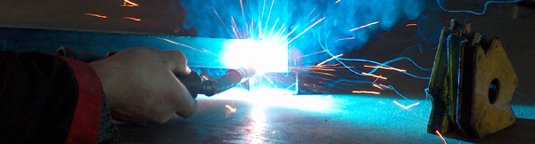
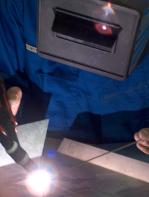

Oferta
Zajmujemy się opracowaniem i realizacją lekkich konstrukcji stalowych, opartych o:
- prace ślusarskie
- obróbkę skrawaniem
- prace spawalnicze
- lakierowanie proszkowe
- i inne.

Wykonujemy tego typu prace według projektów przygotowanych przez nas, bądź według projektu klienta.
Zakres prac jest bardzo szeroki, od prostych prac mechanicznych, jak:
- cięcie
- spawanie
- toczenie
- frezowanie
- szlifowanie
do realizacji kompleksowych projektów, np. wyposażanie linii produkcyjnych i montażowych, konstrukcje wyposażenia hal targowych i magazynowych, instalacji klimatyzacyjnych i wyciągowych, standy reklamowe i wiele innych.
©2010 EM-AR Spółka z o.o.